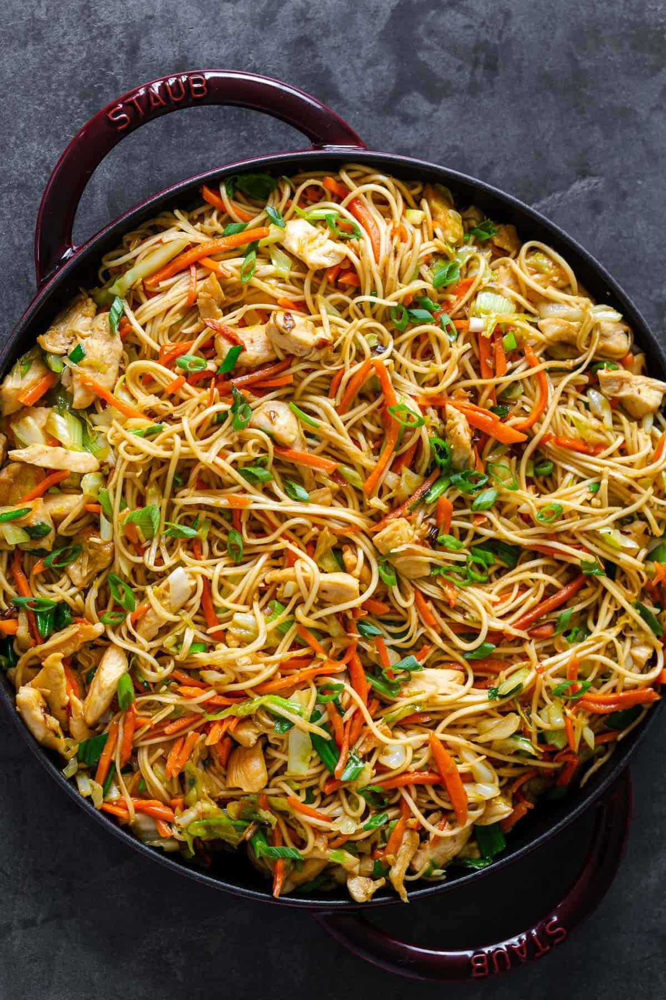
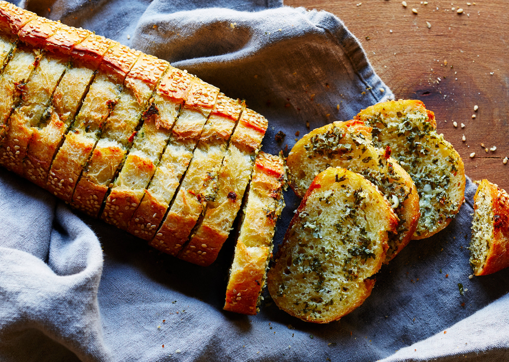

- Main Dishes
-
 Chicken shawarma
Chicken shawarma
-
 Spaghetti Bolognese
Spaghetti Bolognese
-  Chow-mein Noodles
- Side Dishes
-  Garlic Bread
- Roasted Vegetables
- Hummus
- Desserts
 Tres Leches
Tres Leches
 Cheesecake
Cheesecake
- Lazy Cake
- Baking
- Cake
-
 Cookies
Cookies
- Banana Bread